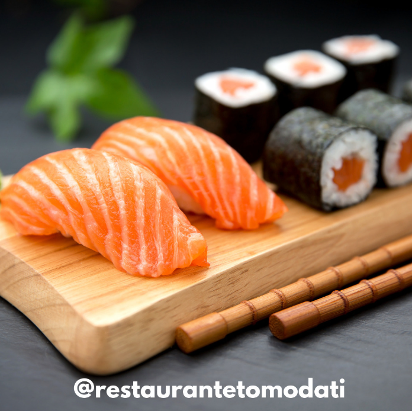
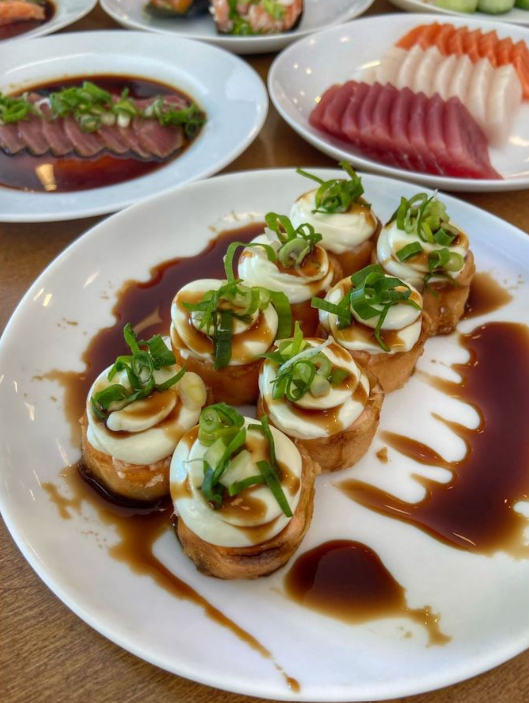
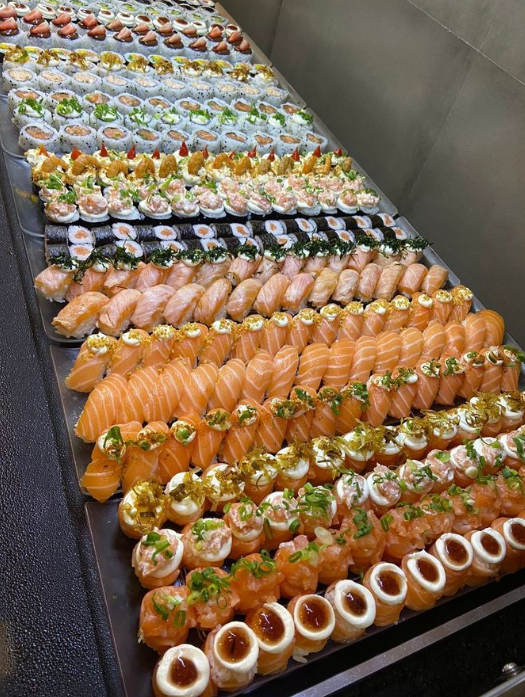

SOBRE O RESTAURANTE
O Restaurante Tomodati nasceu em 2000, em uma das mais badaladas Praia de Guarujá, a Praia da Enseada/Tortugas.
Com alto padrão de qualidade, conquistou clientes e abriu filiais no Centro de Guarujá e na cidade de São Paulo e São Bernardo do campo.
rodízio completo da culinária japonesa é o carro chefe da rede Tomodati inclui os tradicionais sushis, sashimis e pratos quentes, além de itens especialmente elaborados para encantar os paladares mais apurados, com variedade e fartura.
Os ambientes modernos e acolhedores do Tomodati contam agora também com câmara de desinfecção para segurança de nossos colaboradores e clientes. Venha conhecer!


